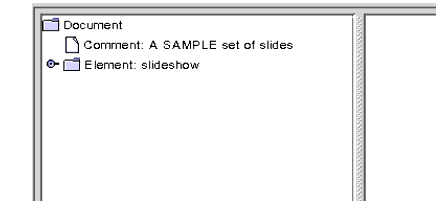
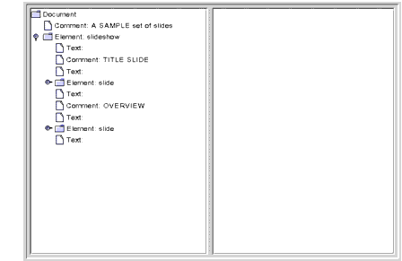
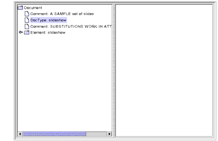
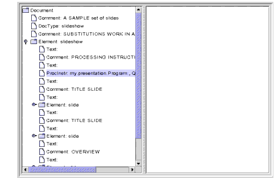
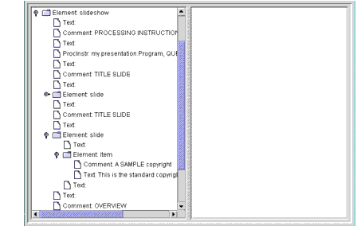
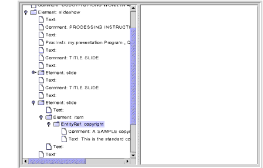
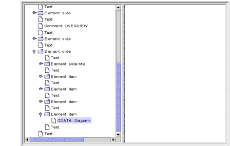

Examining the Structure of a DOM
In this section, you'll use the GUIfied DomEcho application created in the preceding section to visually examine a DOM. You'll see what nodes make up the DOM and how they are arranged. With the understanding you acquire, you'll be well prepared to construct and modify Document Object Model structures in the future.
Displaying a Simple Tree
We'll start by displaying a simple file so that you get an idea of basic DOM structure. Then we'll look at the structure that results when you include some advanced XML elements.
Note: The code used to create the figures in this section is in
DomEcho02.java. The file displayed isslideSample01.xml. (The browsable version isslideSample01-xml.html.)
Figure 6-1 shows the tree you see when you run the DomEcho program on the first XML file you created,
slideSample01.xml.

Figure 6-1 Document, Comment, and Element Nodes Displayed
Recall that the first bit of text displayed for each node is the element
type. After that comes the elementname, if any, and then the elementvalue. This view shows three element types:Document,Comment, andElement. There is only one node ofDocumenttype for the whole tree, the root node. TheCommentnode displays thevalueattribute, and theElementnode displays the elementname,slideshow.Compare Figure 6-1 with the code in the
AdapterNode'stoStringmethod to see whether the name or the value is being displayed for a particular node. If you need to make it more clear, modify the program to indicate which property is being displayed (for example, with N: name, V: value).Expanding the
slideshowelement brings up the display shown in Figure 6-2.

Figure 6-2 Element Node Expanded, No Attribute Nodes Showing
Here, you can see the
Textnodes andCommentnodes, which are interspersed betweenslideelements. The emptyTextnodes exist because there is no DTD to tell the parser that no text exists. (Generally, the vast majority of nodes in a DOM tree will beElementandTextnodes.)
Note: Important! Text nodes exist under element nodes in a DOM, and data is always stored in text nodes. Perhaps the most common error in DOM processing is to navigate to an element node and expect it to contain the data that is stored in that element. Not so! Even the simplest element node has a text node under it that contains the data. For example, given
<size>12</size>, there is an element node (size), and a text node under it that contains the actual data (12).
Notably absent from this picture are the
Attributenodes. An inspection of the table inorg.w3c.dom.Nodeshows that there is indeed anAttributenode type. But they are not included as children in the DOM hierarchy. They are instead obtained via theNodeinterfacegetAttributesmethod.
Note: The display of the text nodes is the reason for including the following lines in the
AdapterNode'stoStringmethod. If you remove them, you'll see the funny characters (typically square blocks) that are generated by the newline characters that are in the text.String t = domNode.getNodeValue().trim();
int x = t.indexOf("\n");
if (x >= 0) t = t.substring(0, x);
s += t;
Displaying a More Complex Tree
Here, you'll display the example XML file you created at the end of Chapter 5 to see what entity references, processing instructions, and
CDATAsections look like in the DOM.
Note: The file displayed in this section is
slideSample10.xml. TheslideSample10.xmlfile referencesslideshow3.dtd, which, in turn, referencescopyright.xmland a (very simplistic)xhtml.dtd.(The browsable versions areslideSample10-xml.html,slideshow3-dtd.html,copyright-xml.html, andxhtml-dtd.html.)
Figure 6-3 shows the result of running the DomEcho application on
slideSample10.xml, which includes aDOCTYPEentry that identifies the document's DTD.

Figure 6-3
DocTypeNode DisplayedThe
DocTypeinterface is actually an extension ofw3c.org.dom.Node. It defines agetEntitiesmethod, which you use to obtainEntitynodes--the nodes that define entities such as theproductentity, which has the valueWonderWidgets. LikeAttributenodes,Entitynodes do not appear as children of DOM nodes.When you expand the
slideshownode, you get the display shown in Figure 6-4.

Figure 6-4 Processing Instruction Node Displayed
Here, the processing instruction node is highlighted, showing that those nodes do appear in the tree. The
nameproperty contains the target specification, which identifies the application that the instruction is directed to. Thevalueproperty contains the text of the instruction.Note that empty text nodes are also shown here, even though the DTD specifies that a
slideshowcan containslideelements only, never text. Logically, then, you might think that these nodes would not appear. (When this file was run through the SAX parser, those elements generatedignorableWhitespaceevents rather thancharacterevents.)Moving down to the second
slideelement and opening theitemelement under it brings up the display shown in Figure 6-5.

Figure 6-5 JAXP 1.2 DOM: Item Text Returned from an Entity Reference
Here, you can see that a text node containing the copyright text (rather than the entity reference that points to it) was inserted into the DOM.
For most applications, the insertion of the text is exactly what you want. In that way, when you're looking for the text under a node, you don't have to worry about any entity references it might contain. For other applications, though, you may need the ability to reconstruct the original XML. For example, an editor application would need to save the result of user modifications without throwing away entity references in the process.
Various
DocumentBuilderFactoryAPIs give you control over the kind of DOM structure that is created. For example, add the following highlighted line to produce the DOM structure shown in Figure 6-6.public static void main(String argv[]) { ... DocumentBuilderFactory factory = DocumentBuilderFactory.newInstance();factory.setExpandEntityReferences(false);...

Figure 6-6 JAXP 1.1 in 1.4 Platform: Entity Reference Node Displayed
Here, the entity reference node is highlighted. Note that the entity reference contains multiple nodes under it. This example shows only comment and text nodes, but the entity could conceivably contain other element nodes.
Moving down to the last
itemelement under the lastslidebrings up the display shown in Figure 6-7.

Figure 6-7
CDATANode DisplayedHere, the
CDATAnode is highlighted. Note that there are no nodes under it. Because aCDATAsection is entirely uninterpreted, all its contents are contained in the node'svalueproperty.Summary of Lexical Controls
Lexical information is the information you need to reconstruct the original syntax of an XML document. As discussed earlier, preserving lexical information is important in editing applications, where you want to save a document that is an accurate reflection of the original--complete with comments, entity references, and any
CDATAsections it may have included at the outset.Most applications, however, are concerned only with the content of the XML structures. They can afford to ignore comments, and they don't care whether data was coded in a
CDATAsection or as plain text, or whether it included an entity reference. For such applications, a minimum of lexical information is desirable, because it simplifies the number and kind of DOM nodes that the application must be prepared to examine.The following
DocumentBuilderFactorymethods give you control over the lexical information you see in the DOM:
setCoalescing(): To convertCDATAnodes toTextnodes and append to an adjacentTextnode (if any)setExpandEntityReferences(): To expand entity reference nodessetIgnoringComments(): To ignore commentssetIgnoringElementContentWhitespace(): To ignore whitespace that is not a significant part of element contentThe default values for all these properties is
false, which preserves all the lexical information necessary to reconstruct the incoming document in its original form. Setting them totruelets you construct the simplest possible DOM so that the application can focus on the data's semantic content without having to worry about lexical syntax details. Table 6-2 summarizes the effects of the settings.
Finishing Up
At this point, you have seen most of the nodes you will ever encounter in a DOM tree. There are one or two more that we'll mention in the next section, but you now know what you need to know to create or modify a DOM structure.
All of the material in The J2EE(TM) 1.4 Tutorial is copyright-protected and may not be published in other works without express written permission from Sun Microsystems.